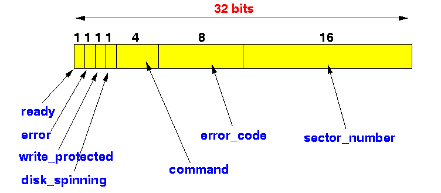

- Bit fields:
- Bit field = a uniquely C programming language feature to assign names to certain bit positions in an int typed variable.
- Example on how to
use bit fields:
- Suppose a 32 bits register
of a hard disk device is
partitioned (organized) as follows:

- The following
bit field structure definition
represents the above structure:
struct Disk_Register { unsigned int ready:1 ; // 1 bit field named "ready" unsigned int error:1 ; // 1 bit field named "error" unsigned int wr_prot:1 ; unsigned int dsk_spinning:1 ; unsigned int command:4 ; // 4 bits field named "command" unsigned int error_code:8 ; unsigned int sector_no:16 ; };You can then use the above bit field structure definition to define bit field variables (see example below)
- Suppose a 32 bits register
of a hard disk device is
partitioned (organized) as follows:
- Fact:
- Bit fields are
much easier to use than
bit operations with
& and
| operators
because:
- We can access the field by using the field name !
(In contrats, using & and | operations, you need to use the bit position (a numeric value - which is harder to work with))
- Bit fields are
much easier to use than
bit operations with
& and
| operators
because:
- Example:
struct Disk_Register { unsigned int ready:1 ; // 1 bit field named "ready" unsigned int error:1 ; // 1 bit field named "error" unsigned int wr_prot:1 ; unsigned int dsk_spinning:1 ; unsigned int command:4 ; // 4 bits field named "command" unsigned int error_code:8 ; unsigned int sector_no:16 ; }; int main( int argc, char* argv[] ) { struct Disk_Register r; printf( "sizeof(r) = %d\n", sizeof(r) ); // 4 bytes (32 bits) int* p = (int *) &r; // Access r as in int through pointer p *p = 0; // Clear all 32 bits in r ! r.error = 1; // Set the error bit (bit #30) printBits( *p ); // Call the printBits() function putchar('\n'); r.dsk_spinning = 1; // Set the dsk_spinning bit (bit #28) printBits( *p ); // Call the printBits() function putchar('\n'); }Output:
sizeof(r) = 4 01000000000000000000000000000000 01010000000000000000000000000000
- Example Program:
(Demo above code)

- Prog file: click here
How to run the program:
- Right click on link(s) and
save in a scratch directory
- To compile: gcc bit-field1.c
- To run: ./a.out
- Programming trick:
- In the above example, I used
a C programming trick to
clear all 32 bits in
the bit field variable:
int* p = (int *) &r; // We need to CAST the // "address of struct DiskRegister" // to an "address of int (int *)" *p = 0; // Clear all 32 bits in r !
- In the above example, I used
a C programming trick to
clear all 32 bits in
the bit field variable:
- A cleaner way is to
use a union to
re-map the
same 32 bits onto an
int typed component:
/* ------------------------------------------------------- Define the mapping of the 32 bits in the Disk Register ------------------------------------------------------- */ struct Disk_Register { unsigned int ready:1 ; // 1 bit field named "ready" unsigned int error:1 ; // 1 bit field named "error" unsigned int wr_prot:1 ; unsigned int dsk_spinning:1 ; unsigned int command:4 ; // 4 bits field named "command" unsigned int error_code:8 ; unsigned int sector_no:16 ; }; /* ========================================================== Re-map the 32 bits Disk Register AND a integer together ========================================================== */ union U_Disk_Register { struct Disk_Register Reg; // (1) 32 bits mapped as struct Disk_Register int Whole_Reg; // (2) 32 bits as one int };Notice that:
- The union union U_Disk_Register
has 2 components:
- struct Disk_Register Reg
- int Whole_Reg
- Facts:
- Both variables
(Reg and
Whole_Reg)
are 32 bites in length
- Because it is a union, both variables (Reg and Whole_Reg) are located in the same address in memory
We have effectively re-mapped the 32 bits in a struct Disk_Register onto the 32 bits in an int variable (these 2 variables occupy the same memory cells) !!!
- Both variables
(Reg and
Whole_Reg)
are 32 bites in length
- The union union U_Disk_Register
has 2 components:
- We can now access all 32 bits
through the int type
component:
Whole_RegExample:
struct Disk_Register { unsigned int ready:1 ; // 1 bit field named "ready" unsigned int error:1 ; // 1 bit field named "error" unsigned int wr_prot:1 ; unsigned int dsk_spinning:1 ; unsigned int command:4 ; // 4 bits field named "command" unsigned int error_code:8 ; unsigned int sector_no:16 ; }; /* ========================================================== Re-map the 32 bits Disk Register AND a integer together ========================================================== */ union U_Disk_Register { struct Disk_Register Reg; // (1) 32 bits mapped as struct Disk_Register int Whole_Reg; // (2) 32 bits as one int }; int main( int argc, char* argv[] ) { union U_Disk_Register r; printf( "sizeof(r) = %d\n", sizeof(r) ); // Still 4 bytes !!! r.Whole_Reg = 0; // Clear all 32 bits r.Reg.error = 1; // Set the error bit (bit #30) printBits( r.Whole_Reg ); // Call the printBits() function putchar('\n'); r.Reg.dsk_spinning = 1; // Set the dsk_spinning bit (bit #28) printBits( r.Whole_Reg ); // Call the printBits() function putchar('\n'); }Output:
sizeof(r) = 4 01000000000000000000000000000000 01010000000000000000000000000000
- Example Program:
(Demo above code)
- Prog file: click here
How to run the program:
- Right click on link(s) and
save in a scratch directory
- To compile: gcc bit-field2.c
- To run: ./a.out
- Note:
- A more complex re-mapping scheme is used
in network programming
(using multiple
struct's inside the
union definition).
We won't discuss this complex re-mapping here....
- A more complex re-mapping scheme is used
in network programming
(using multiple
struct's inside the
union definition).
- Portability problem:
- When the same C program is compiled on different systems, the C program may not work properly when you use bit fields
- Some portability problems:
- Limit on the
number of bits in the
bit field structure.
- Some compilers use 32 bits, others may use 16 bits !
- Ordering of the bits
- Some C compilers use the left to right order, while other C compiler use the right to left order
- Limit on the
number of bits in the
bit field structure.
- Example:
struct MyMap { unsigned int b31:1; unsigned int b30:1; unsigned int b29:1; unsigned int b28:1; unsigned int b27:1; unsigned int b26:1; unsigned int b25:1; unsigned int b24:1; unsigned int b23:1; unsigned int b22:1; unsigned int b21:1; unsigned int b20:1; unsigned int b19:1; unsigned int b18:1; unsigned int b17:1; unsigned int b16:1; unsigned int b15:1; unsigned int b14:1; unsigned int b13:1; unsigned int b12:1; unsigned int b11:1; unsigned int b10:1; unsigned int b9:1; unsigned int b8:1; unsigned int b7:1; unsigned int b6:1; unsigned int b5:1; unsigned int b4:1; unsigned int b3:1; unsigned int b2:1; unsigned int b1:1; unsigned int b0:1; }; int main( int argc, char* argv[] ) { struct MyMap r; printf( "sizeof(r) = %lu\n", sizeof(r) ); int *p = (int *) &r; // Make p point to r *p = 0; // Clear all 32 bits in r printBits( *p ); // Print the bits in r putchar('\n'); r.b0 = 1; printBits( *p ); // Print the bits in r putchar('\n'); r.b8 = 1; r.b9 = 1; printBits( *p ); // Print the bits in r putchar('\n'); r.b16 = 1; r.b17 = 1; r.b18 = 1; printBits( *p ); // Print the bits in r putchar('\n'); r.b30 = 1; printBits( *p ); // Print the bits in r putchar('\n'); }When run on solar:
sizeof(r) = 4 00000000000000000000000000000000 (left to right order) 00000000000000000000000000000001 00000000000000000000001100000001 00000000000001110000001100000001 01000000000001110000001100000001
When run on a lab machine (linux):
sizeof(r) = 4 00000000000000000000000000000000 (right to left order !) 10000000000000000000000000000000 10000000110000000000000000000000 10000000110000001110000000000000 10000000110000001110000000000010
- Example Program:
(Demo above code)
- Prog file: click here
How to run the program:
- Right click on link(s) and
save in a scratch directory
- To compile: gcc bit-field3.c
- To run: ./a.out